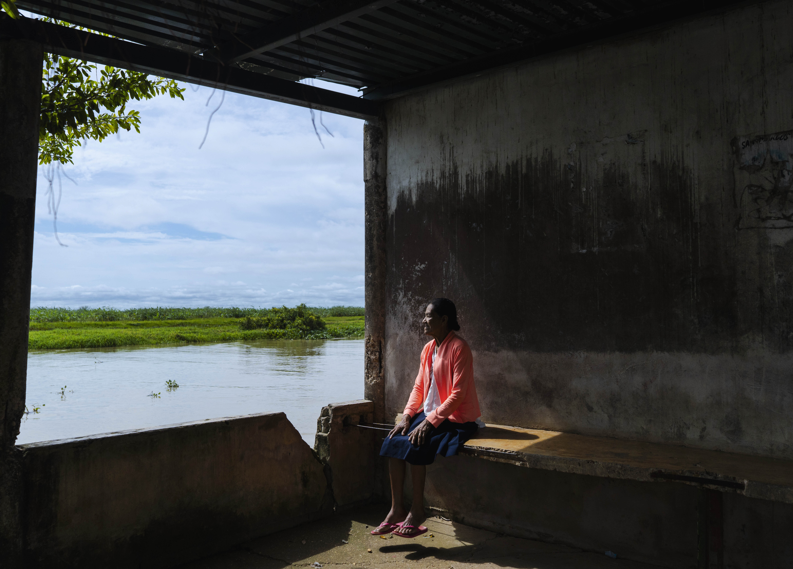
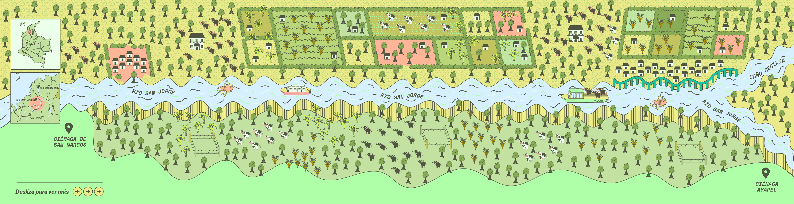
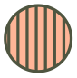
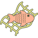

En la Depresión Momposina la inundación no siempre significa desastre
› Diciembre 1 de 2025
#HablemosDeLaMojana
La Mojana es una región de once municipios atravesados por las aguas de tres de los ríos más grandes de Colombia: el Cauca, el Magdalena y el San Jorge. Es el punto donde se fragmentan en una variedad de ciénagas, caños y bosques inundables que parecen infinitos y que corresponden al 9 % de los 30 millones de hectáreas del sistema de humedales del país.
Desde hace siglos, los humanos han buscado formas de vivir en un ecosistema tan complejo como este, en el que se desarrollan oídos que escuchan peces y ojos que ven atarrayas que parecen invisibles. De hecho, este paisaje ha marcado la vida y las costumbres de los mojaneros, que durante años han vivido con la certeza de la inundación ocho meses al año y del verano durante cuatro.
Hoy, la idea de emergencia por las recurrentes crecidas ha marcado una batalla con las aguas de La Mojana. Es una perspectiva que prioriza la construcción de diques y canales, pero deja atrás la comprensión más amplia sobre un ecosistema que pone a prueba la idea de que solo es posible vivir en lugares completamente secos.
Este es un especial periodístico sobre las distintas aguas que confluyen en La Mojana, las formas de habitarlas y los movimientos o “pulsos” que para algunos son un ciclo y para otros un desastre.
Navegar la historia de una relación incomprendida
Una extensa red de aguas en La Mojana ha determinado las decisiones de vida de los pueblos que viven junto (e inmersos) en ellas, ¿cómo han llevado esa relación infranqueable?

REPORTAJE
Aguas con pulso en La Mojana: la historia más allá del “desastre”
› Natalia Duque Vergara
Resolver la vida junto al caudal de tres de los ríos más grandes de Colombia no es una labor sencilla, menos si implica vivir inundaciones que duran varios meses al año. Así viven las comunidades de La Mojana.
Navegar con los ojos a La Mojana
Explora esta galería fotográfica con los retratos de los paisajes, animales y personas de un ecosistema que es único en el país.
GALERÍA
Cuando el río suena, historias lleva: La Mojana
Navegar fluyendo en las aguas del río San Jorge
Una inmersión ilustrada a partir de lo que ocurre a ambas orillas de uno de los principales ríos de la región de La Mojana. Unos 35 kilómetros desde la Ciénaga de San Marcos, en Sucre, hasta Seheve, en el límite con Córdoba.

Comunidad El Torno
Finca Las Mercedes
Adjudicaciones del Incora
Yonson Lechero
Comunidad de Venecia
Parcelas: Monosolo, La Mancha, Campanito, La Gloria
Ganadería extensiva de búfalos
Yonson bufalero
Comunidad de Seheve
Convenciones
Ciénaga
baldíos de la nación
Río San Jorge

"Pequeños" propietarios
Cultivo de arroz
Cultivos de plátano y maíz
Búfalos
Vacas

Pescadores
Muro de contención de Seheve
Sigue la conversación
Este especial periodístico es el corazón de una conversación social, una estrategia participativa y multiformato en plataformas como Instagram, Twitter, Facebook y Tik-tok, así como en nuestro canal de Whatsapp.
Para participar, solo hay que comentar los contenidos en tu red social favorita o usar el #HablemosDeLaMojana
Agradecemos a Miguel Severiche por su compañía y guía durante nuestro recorrido en campo. A Neyla Severiche por su cariño y por la alimentación que preparó. Y a las comunidades de La Mojana que amablemente nos recibieron y compartieron sus historias.
Este proyecto fue posible gracias al apoyo económico y académico del Instituto Colombiano de Antropología e Historia (ICANH). Aclaramos que la dirección editorial tuvo total independencia para la realización del especial.
Cita nuestro proyecto como:
Mutante (2026). Todas las aguas llevan a La Mojana: En la Depresión Momposina la inundación no siempre significa desastre. https://mutante.org/especiales/todas-las-aguas-llevan-a-la-mojana/
Sigue la conversación
Este especial periodístico es el corazón de una conversación social, una estrategia participativa y multiformato en plataformas como Instagram, Twitter, Facebook y Tik-tok, así como en nuestro canal de Whatsapp.
Para participar, solo hay que comentar los contenidos en tu red social favorita o usar el #HablemosDeLaMojana
1. Declaración de intenciones y pregunta de expectativa
› junio 7 de 20252. Activación con hallazgos del especial
› junio 9 de 20253. Retratos de la transformación en el foto ensayo "La Sabana Encerrada"
› junio 10 de 20253. Retratos de la transformación en el foto ensayo "La Sabana Encerrada"
› junio 10 de 2025